Sou Camyle Ribeiro, advogada com prática no contencioso e no controle de prazos. Desenho e opero automações jurídicas: entendo onde o trabalho trava, traduzo a regra do processo em regra de sistema e acompanho a ferramenta no uso real.
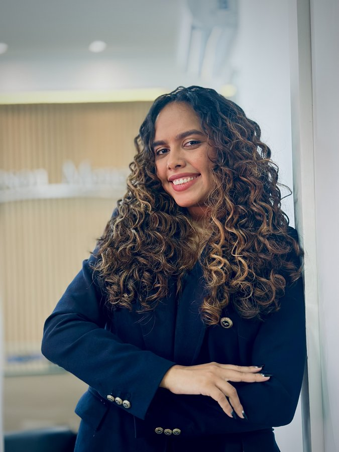
Venho da linha de frente: leitura de publicações, controle de prazos, petições, audiências. Como coordenadora do jurídico, controller e prazista, sou responsável por garantir que cada prazo seja visto, distribuído e cumprido.
Nesse papel aprendi onde o trabalho jurídico perde tempo e segurança, e passei a construir sistemas para resolver isso. Hoje falo as duas línguas: a do processo e a do produto.
“Tecnologia boa é a que devolve tempo para a advogada pensar.”
Problema: leitura manual diária, risco de prazo perdido.
Solução: rotina que lê as publicações e lança prazos e audiências já calculados.
Resultado: tudo pronto para conferir às 8h.
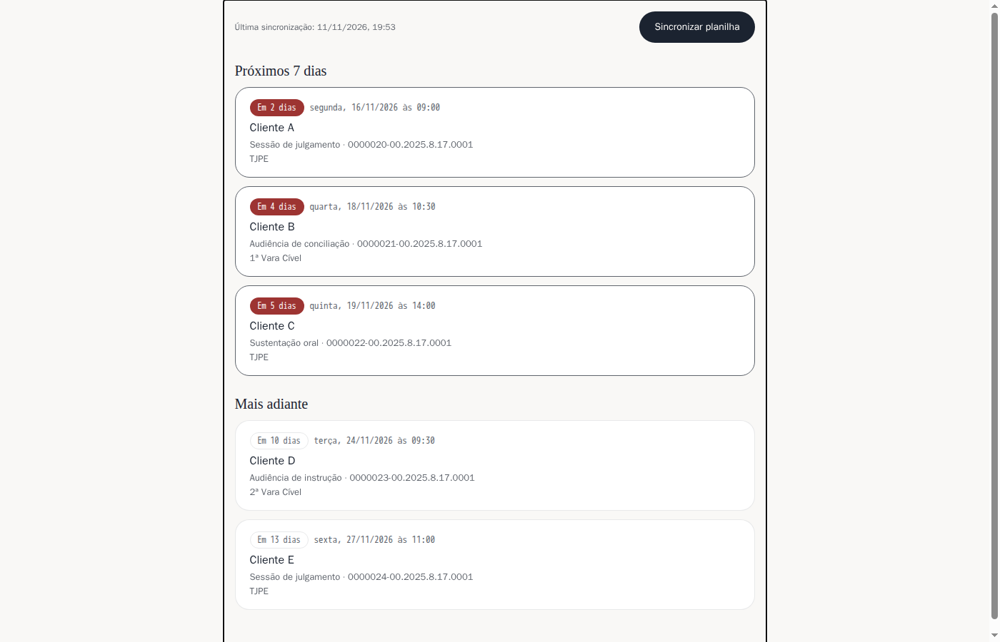
Problema: planilha difícil de enxergar por dia e por urgência.
Solução: calendário que espelha a planilha em tempo real.
Resultado: 157 prazos numa única fonte.
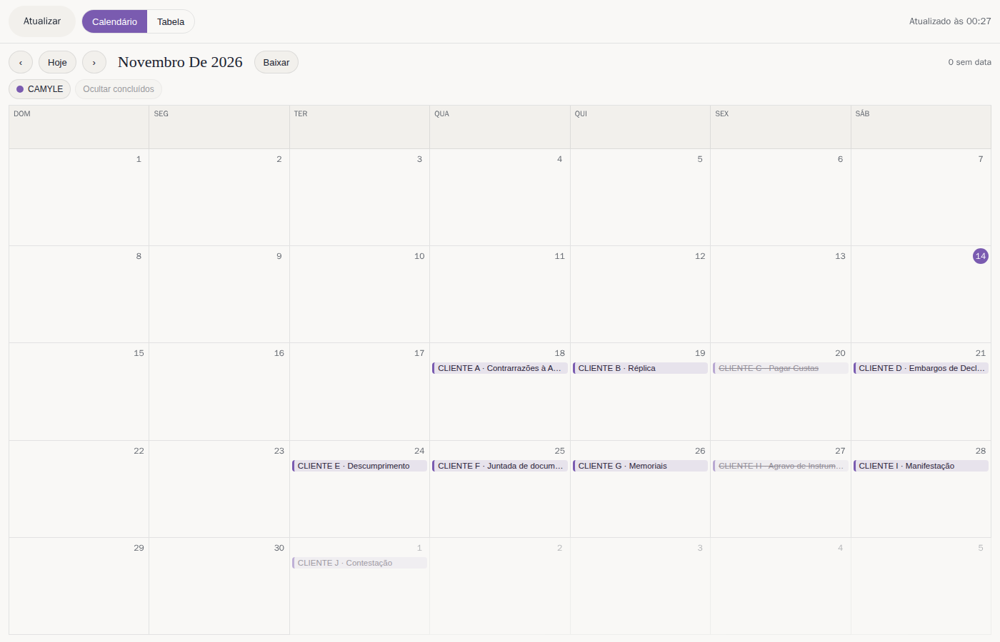
Problema: peças repetitivas recomeçavam do zero.
Solução: os modelos viram skills, mas cada petição sai personalizada para o caso, com os fatos, documentos e pedidos daquele cliente. A jurisprudência é pesquisada e conferida, sempre com a ementa completa, nunca inventada. Os pontos que pedem decisão da advogada vêm destacados em vermelho, para ela revisar antes de aprovar. Revisão e versões em cada peça.
Resultado: 126 peças em 30 dias, nada sai sem aprovação.
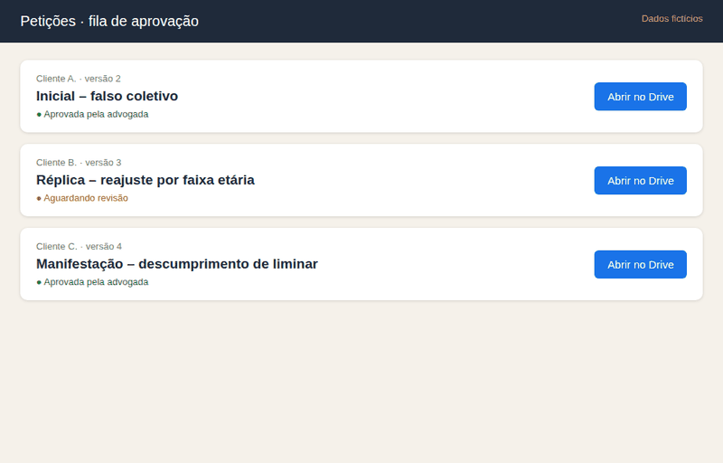
Problema: o trabalho era feito na ordem em que as demandas chegavam, e não pela data em que cada prazo terminava. Com isso, um prazo próximo do fim podia ficar para trás.
Solução: uma agenda montada automaticamente a partir da planilha de prazos. Cada dia mostra primeiro o que vence naquele dia e já adianta os próximos prazos, para nada ser feito em cima da hora. Cada tarefa tem o link direto para a pasta do cliente no Drive.
Resultado: 192 tarefas concluídas no mês.
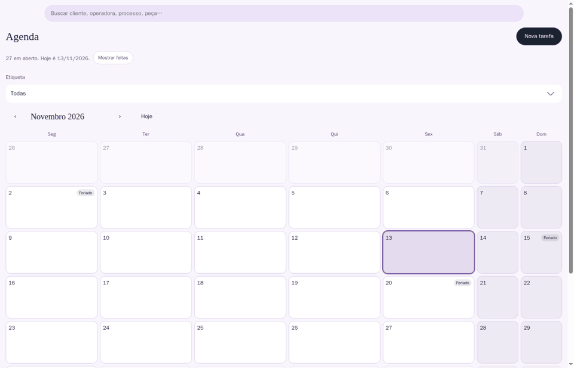
Problema: pedir e cobrar documentos tomava horas.
Solução: mensagem no grupo do cliente, enviada só após aprovação.
Resultado: a advogada entra com tudo completo.
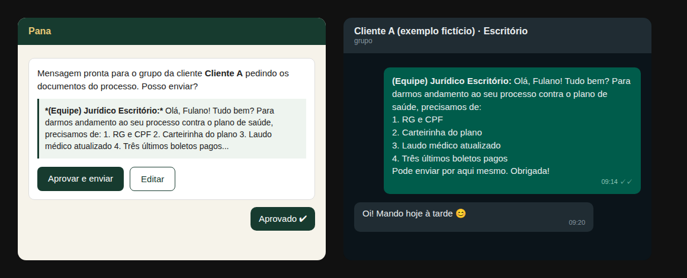
Problema: casos espalhados entre planilha e anotações.
Solução: quadro por etapa, com o que falta e quem deve.
Resultado: 32 casos acompanhados sem perder nenhum.
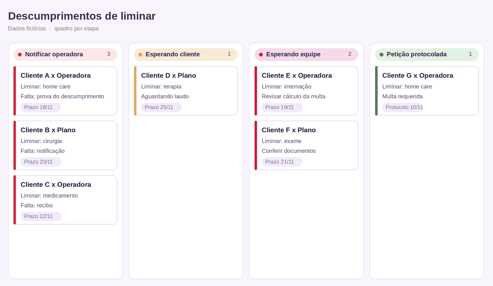
Problema: conversas com cliente e envios de documentos se perdiam no WhatsApp e no e-mail.
Solução: toda conversa com o cliente e todo documento enviado ficam registrados nas OBSERVAÇÕES da planilha de prazos, com a data. Ex.: “Documentação enviada ao cliente em 12/11”.
Resultado: qualquer pessoa da equipe abre o processo e sabe o que já foi feito.
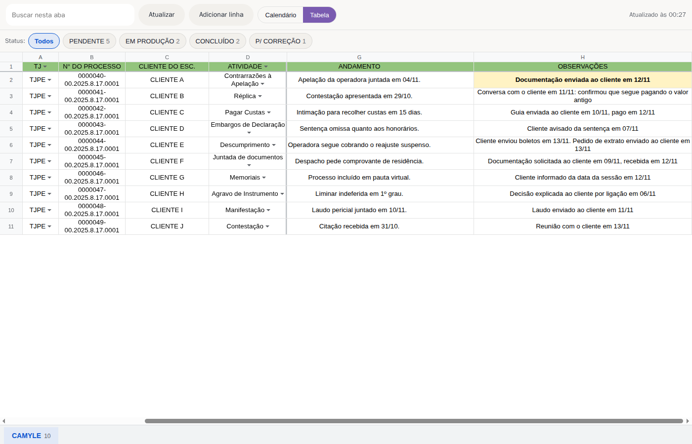
Problema: cada juiz decide de um jeito, e essa informação ficava só na memória de quem já tinha atuado naquela vara.
Solução: uma planilha que reúne, por vara, magistrado e tema, quantas liminares foram concedidas e quando saiu a última decisão. Antes de escrever a peça, a advogada consulta e escolhe a tese com mais chance naquele juízo.
Resultado: a escolha da tese passa a ser baseada em dados, não em palpite.
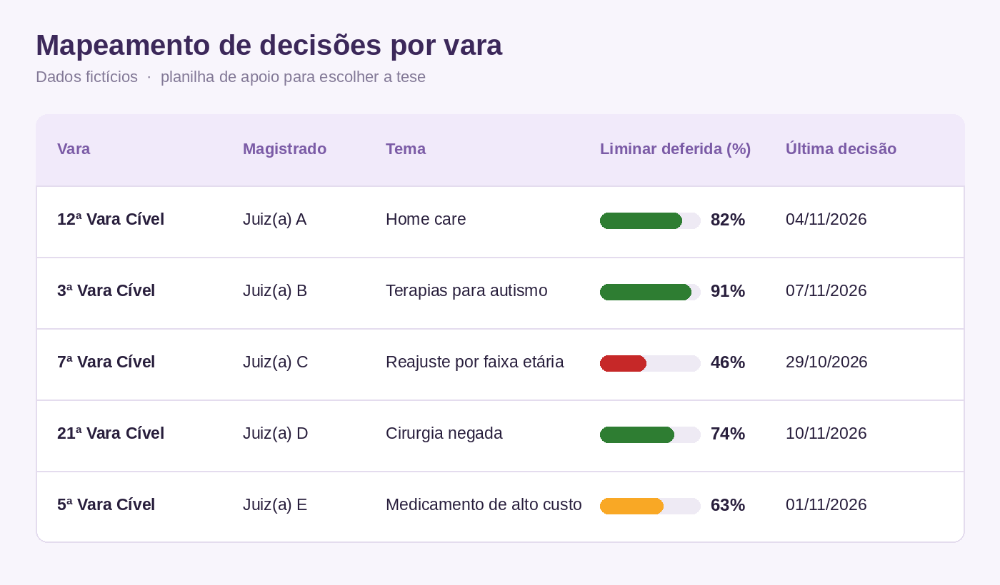
Problema: cada tribunal usa um sistema diferente, e entrar em vários deles todo dia para consultar e protocolar consumia tempo.
Solução: consulta de andamentos e protocolo de peças no PJe, no eproc e no Projudi, sempre com autorização prévia da advogada. Nada é consultado ou protocolado sem o ok dela, e cada ação fica registrada.
Resultado: menos tempo trocando de sistema e controle total sobre o que é enviado.
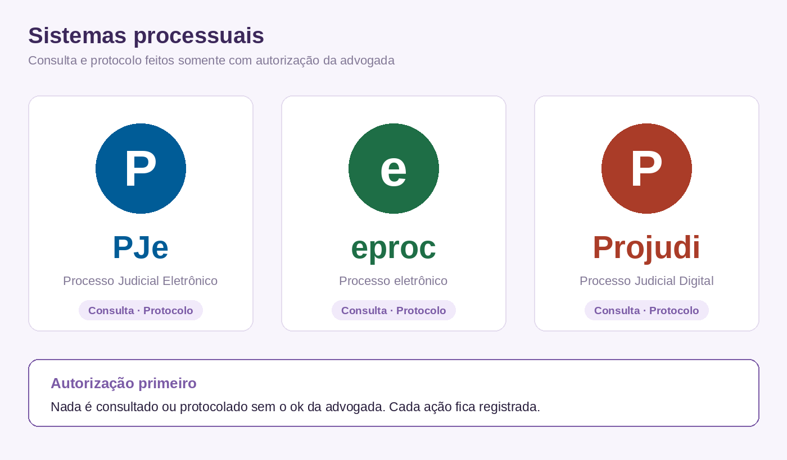
Problema: arquivos chegavam com nomes sem sentido, em formatos diferentes e repetidos, e montar a pasta para a peça era demorado.
Solução: os documentos do cliente são convertidos em PDF, renomeados e numerados na ordem em que aparecem na petição, e as cópias repetidas são removidas.
Resultado: pasta pronta para protocolo, fácil de conferir por qualquer pessoa da equipe.
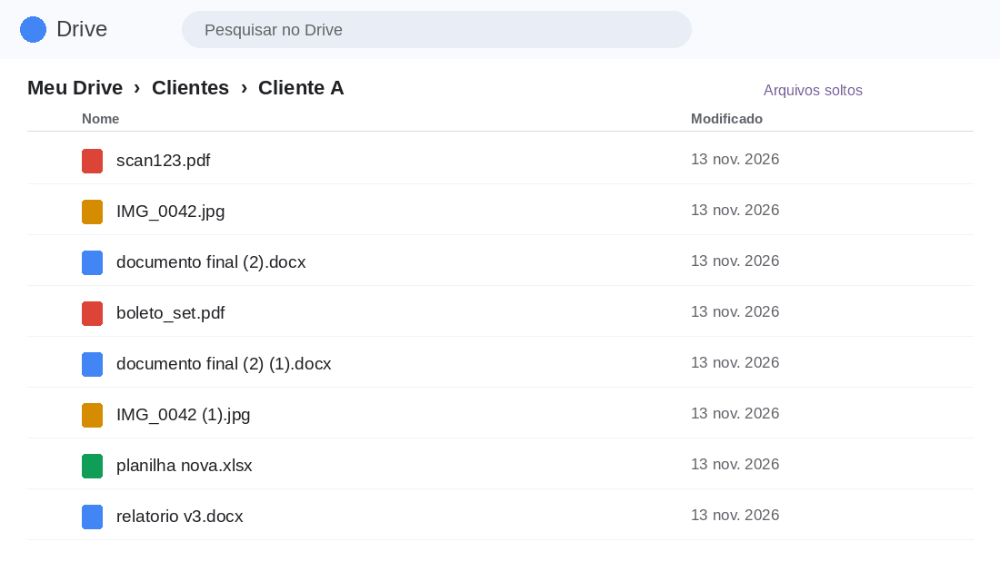
Ferramentas: construo com a Serena, minha assistente no Pana, e com Claude.
A automação organiza, sugere e alerta. A decisão jurídica continua com quem assina.
O sistema calcula prazos do jeito que o tribunal conta: só dias úteis, pulando feriados e dias em que o fórum fecha. São detalhes que só quem já controlou prazo na vida real sabe que fazem diferença.
Nada sai para fora sem conferência. Revisão e versões fazem parte do fluxo, não são um passo opcional.
Dado jurídico é sensível. Acesso mínimo, nada exposto sem necessidade e respeito ao sigilo profissional desde o desenho.
Responsável por todos os processos do escritório, mais de 400: controle de prazos, análise de publicações, estratégia processual, petições, audiências e sustentações orais. Coordeno a equipe jurídica e de diligências: defino o que cada pessoa faz em cada processo, seja petição ou diligência, conduzo as reuniões de equipe e faço o atendimento aos clientes. Foi aqui que construí as automações apresentadas neste portfólio.
Responsável direta por cerca de 180 processos, com foco em casos de autismo e reajustes de plano de saúde. Sustentações orais praticamente toda semana, peças e atendimento a clientes.
Responsável direta pelos prazos de cerca de 300 processos: análise das intimações, resposta aos prazos, audiências, reuniões com clientes e sustentações orais. Coordenei a área de saúde, fui responsável por tributário e aduaneiro durante 6 meses e corresponsável pela área trabalhista, com audiências e sustentações orais.
Atuação cível e em conciliações.
Diligências externas no fórum, em contato direto com juízes, servidores e oficiais de justiça.
Estágio voluntário desde 2017 e depois na Pessoa Tomé Advogados (jul/2018 a mai/2019 e jan a mar/2020), com petições iniciais repetitivas de auxílios e aposentadorias.
Formação
Direito, Universidade Católica de Pernambuco (2022.1)
Sistemas processuais
PJe, e-SAJ, Projudi e eproc
Transformo rotinas jurídicas em etapas, papéis, gatilhos e exceções.
Escrevo prompts e modelos de peças validados, com critérios claros de revisão.
Regras de contagem em dias úteis, feriados e suspensões, traduzidas para sistema.
Conheço na prática os sistemas dos tribunais, publicações e intimações.
Estruturo bases, cálculos e painéis que a equipe consegue manter.
Levo a ferramenta para o uso real e formo a equipe para trabalhar com ela.